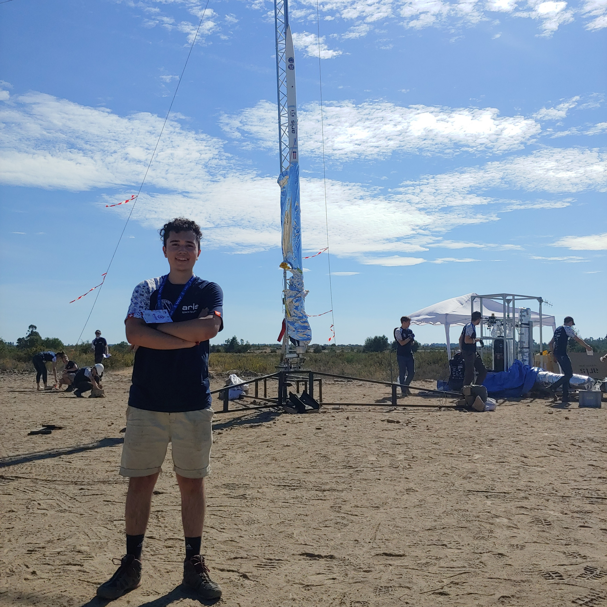
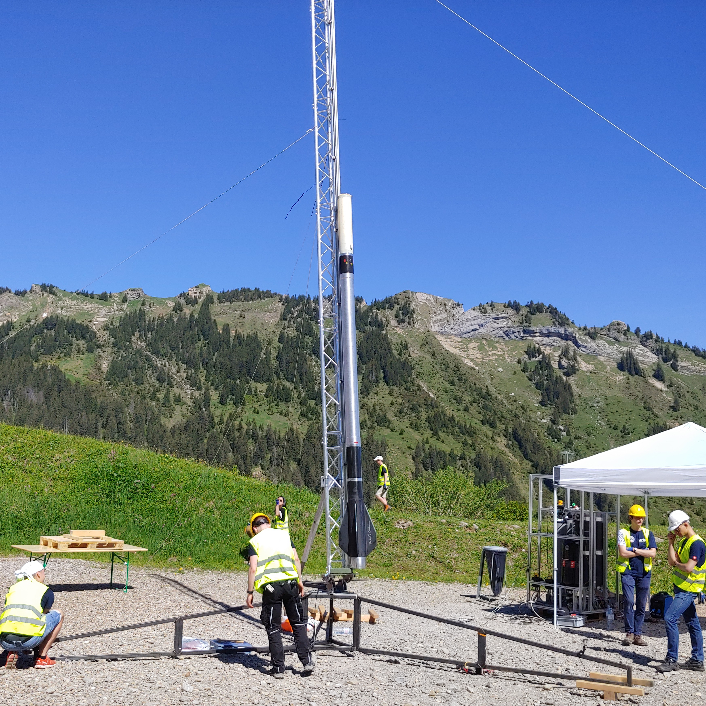

ARIS Project PICCARD
September 2020 - October 2021
Served as one of the Launch Officers on the ARIS Project PICCARD team, working within mission control to develop and execute launch-day safety checklists. The launch officer team was also responsible for acquiring high-power rocketry certifications, enabling a solid rocket motor to be installed in place of the primary hybrid engine, whether as a contingency for technical or timeline issues or for test launches without it. Also selected launch sites using ballistic flight and parachute descent simulations, considering legal constraints, spectator safety, and ease of recovery, and the team went on to win the Hybrid 9 km Flight Award at the European Rocketry Challenge (EuRoC) 2021 in Portugal.


